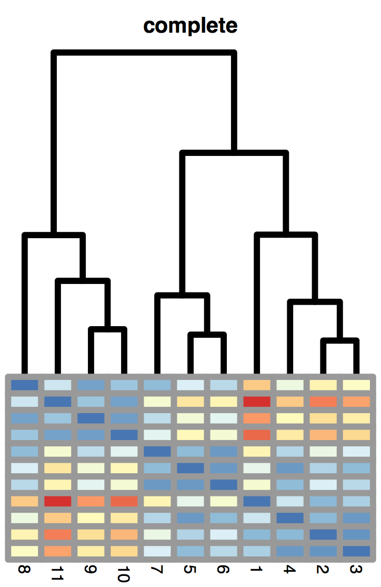
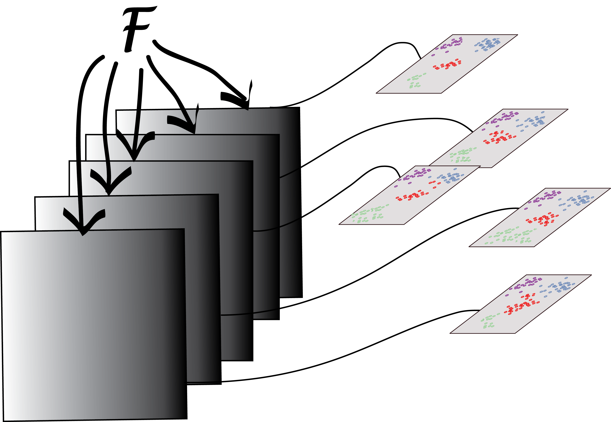
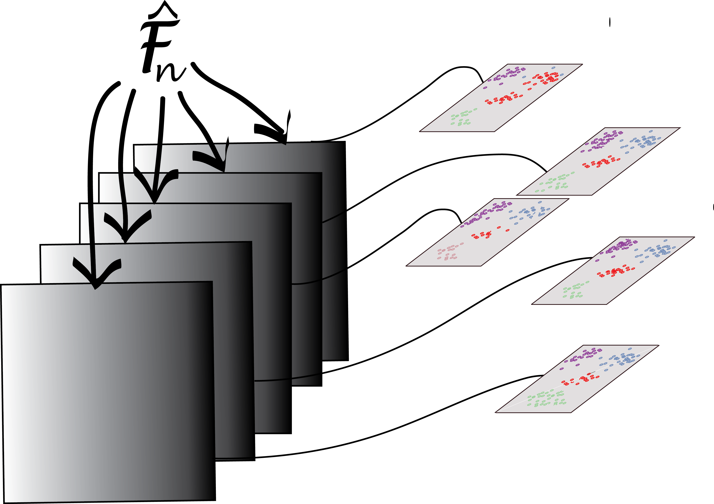

7 5.1 Goals for this chapter

Finding categories of cells, illnesses, organisms and then naming them is a core activity in the natural sciences. In Chapter 4 we’ve seen that some data can be modeled as mixtures from different groups or populations with a clear parametric generative model. We saw how in those examples we could use the EM algorithm to disentangle the components. We are going to extend the idea of unraveling of different groups to cases where the clusters do not necessarily have nice elliptic1 shapes.
1 Mixture modeling with multivariate normal distributions implies elliptic cluster boundaries.
Clustering takes data (continuous or quasi-continuous) and adds to them a new categorical group variable that can often simplify decision making; even if this sometimes comes at a cost of ignoring intermediate states. For instance, medical decisions are simplified by replacing possibly complex, high-dimensional diagnostic measurements by simple groupings: a full report of numbers associated with fasting glucose, glycated hemoglobin and plasma glucose two hours after intake is replaced by assigning the patient to a diabetes mellitus “group”.
In this chapter, we will study how to find meaningful clusters or groups in both low-dimensional and high-dimensional nonparametric settings. However, there is a caveat: clustering algorithms are designed to find clusters, so they will find clusters, even where there are none2. So, cluster validation is an essential component of our process, especially if there is no prior domain knowledge that supports the existence of clusters.
2 This is reminescent of humans: we like to see patterns—even in randomness.
In this chapter we will
Study the different types of data that can be beneficially clustered.
See measures of (dis)similarity and distances that help us define clusters.
Uncover hidden or latent clustering by partitioning the data into tighter sets.
Use clustering when given biomarkers on each of hundreds of thousands cells. We’ll see that for instance immune cells can be naturally grouped into tight subpopulations.
Run nonparametric algorithms such as \(k\) -means, \(k\) -medoids on real single cell data.
Experiment with recursive approaches to clustering that combine observations and groups into a hierarchy of sets; these methods are known as hierarchical clustering.
Study how to validate clusters through resampling-based bootstrap approaches, which we will demonstrate on a single-cell dataset.
{kind=link}
Figure 5.1: John Snow’s map of cholera cases: small barcharts at each house indicate a clustering of diagnosed cases.

David Freedman has a wonderful detailed account of all the steps that led to this discovery (Freedman 1991).
7.1 5.2 What are the data and why do we cluster them?
7.1.1 5.2.1 Clustering can sometimes lead to discoveries.
John Snow made a map of cholera cases and identified clusters of cases. He then collected additional information about the situation of the pumps. The proximity of dense clusters of cases to the Broadstreet pump pointed to the water as a possible culprit. He collected separate sources of information that enabled him to infer the source of the cholera outbreak.
Now, let’s look at another map of London, shown in Figure 5.2. The red dots designate locations that were bombed during World War II. Many theories were put forward during the war by the analytical teams. They attempted to find a rational explanation for the bombing patterns (proximity to utility plants, arsenals, \(…\)). In fact, after the war it was revealed that the bombings were randomly distributed without any attempt at hitting particular targets.
{kind=link}
Figure 5.2: Here is a map of the location of the bombs that were dropped on London on September, 7th, 1940 as depicted by the website of the British National Archives http://bombsight.org.
Clustering is a useful technique for understanding complex multivariate data; it is an unsupervised 3. Exploratory techniques show groupings that can be important in interpreting the data.
3 Thus named because all variables have the same status, we are not trying to predict or learn the value of one variable (the supervisory response) based on the information from explanatory variables.
For instance, clustering has enabled researchers to enhance their understanding of cancer biology. Tumors that appeared to be the same based on their anatomical location and histopathology fell into multiple clusters based on their molecular signatures, such as gene expression data (Hallett et al. 2012). Eventually, such clusterings might lead to the definition of new, more relevant disease types. Relevance is evidenced, e.g., by the fact that they are associated with different patient outcomes. What we aim to do in this chapter is understand how pictures like Figure 5.3 are constructed and how to interpret them.
%20and%20the%20Molecular%20Taxonomy%20of%20Breast%20Cancer%20International%20Consortium%20(METABRIC))%20can%20be%20split%20into%20groups%20using%20their%20miRNA%20expression%20%5B@Aure2017%5D.%20The%20authors%20show%20in%20the%20lower%20plots%20that%20the%20survival%20times%20in%20different%20%%20groups%20were%20different.%20Thus%20these%20clusters%20were%20biologically%20and%20clinically%20relevant.%20The%20promise%20of%20such%20analyses%20is%20that%20the%20groups%20can%20be%20used%20to%20provide%20more%20specific,%20optimized%20treatments.%22){kind=link}
Figure 5.3: The breast cancer samples (shown from The Cancer Genome Atlas (TCGA) and the Molecular Taxonomy of Breast Cancer International Consortium (METABRIC)) can be split into groups using their miRNA expression (Aure et al. 2017). The authors show in the lower plots that the survival times in different % groups were different. Thus these clusters were biologically and clinically relevant. The promise of such analyses is that the groups can be used to provide more specific, optimized treatments.
In Chapter 4, we have already studied one technique, the EM algorithm, for uncovering groups. The techniques we explore in this chapter are more general and can be applied to more complex data. Many of them are based on distances between pairs of observations (this can be all versus all, or sometimes only all versus some), and they make no explicit assumptions about the generative mechanism of the data involving particular families of distributions, such as normal, gamma-Poisson, etc. There is a proliferation of clustering algorithms in the literature and in the scientific software landscape; this can be intimidating. In fact it is linked to the diversity of the types of data and the objectives pursued in different domains.
__
Task
Look up the BiocViews Clustering or the Cluster view on CRAN and count the number of packages providing clustering tools.
{kind=link}
Figure 5.4: We decompose the choices made in a clustering algorithm according to the steps taken: starting from an observations-by-features rectangular table \(X\), we choose an observations-to-observations distance measure and compute the distance matrix, here schematized by the triangle. The distances are used to construct the clusters. On the left, we schematize agglomerative methods, that build a hierarchical clustering tree; on the right, partitioning methods that separate the data into subsets. Both types of methods require a choice to be made: the number \(k\) of clusters. For partitionning approaches such as \(k\)-means this choice has to be made at the outset; for hierarchical clustering this can be deferred to the end of the analysis.
7.2 5.3 How do we measure similarity?

Of a feather : how the distances are measured and similarities between observations defined has a strong impact on the clustering result.
Our first step is to decide what we mean by similar. There are multiple ways of comparing birds: for instance, a distance using size and weight will give a different clustering than one using diet or habitat. Once we have chosen the relevant features, we have to decide how we combine differences between the multiple features into a single number. Here is a selection of choices, some of them are illustrated in Figure 5.5.
{kind=link}
{kind=link}
{kind=link}
{kind=link}
Figure 5.5: Equal-distance contour plots according to four different distances: points on any one curve are all the same distance from the center point.
Euclidean The Euclidean distance between two points \(A=(a_1,…,a_p)\) and \(B= (b_1,…,b_p)\) in a \(p\)-dimensional space (for the \(p\) features) is the square root of the sum of squares of the differences in all \(p\) coordinate directions:
\[ d(A,B)=. \]
Manhattan The Manhattan, City Block, Taxicab or \(L_1\) distance takes the sum of the absolute differences in all coordinates.
\[ d(A,B)=|a_1-b_1|+|a_2-b_2|+… +|a_p-b_p|. \]
Maximum The maximum of the absolute differences between coordinates is also called the \(L_\) distance:
\[ d_(A,B)= _{i}|a_i-b_i|. \]
Weighted Euclidean distance is a generalization of the ordinary Euclidean distance, by giving different directions in feature space different weights. We have already encountered one example of a weighted Euclidean distance in Chapter 2, the \(^2\) distance. It is used to compare rows in contingency tables, and the weight of each feature is the inverse of the expected value. The Mahalanobis distance is another weighted Euclidean distance that takes into account the fact that different features may have a different dynamic range, and that some features may be positively or negatively correlated with each other. The weights in this case are derived from the covariance matrix of the features. See also Question 5.1.
Minkowski Allowing the exponent to be \(m\) instead of \(2\), as in the Euclidean distance, gives the Minkowski distance
\[ d(A,B) = ( (a_1-b_1)m+(a_2-b_2)m+… +(a_p-b_p)^m )^. \]
Edit, Hamming This distance is the simplest way to compare character sequences. It simply counts the number of differences between two character strings. This could be applied to nucleotide or amino acid sequences – although in that case, the different character substitutions are usually associated with different contributions to the distance (to account for physical or evolutionary similarity), and deletions and insertions may also be allowed.
Binary When the two vectors have binary bits as coordinates, we can think of the non-zero elements as ‘on’ and the zero elements as ‘off’. The binary distance is the proportion of features having only one bit on amongst those features that have at least one bit on.
Jaccard Distance Occurrence of traits or features in ecological or mutation data can be translated into presence and absence and encoded as 1’s and 0’s. In such situations, co-occurence is often more informative than co- absence. For instance, when comparing mutation patterns in HIV, the co- existence in two different strains of a mutation tends to be a more important observation than its co-absence. For this reason, biologists use the Jaccard index. Let’s call our two observation vectors \(S\) and \(T\), \(f_{11}\) the number of times a feature co-occurs in \(S\) and \(T\), \(f_{10}\) (and \(f_{01}\)) the number of times a feature occurs in \(S\) but not in \(T\) (and vice versa), and \(f_{00}\) the number of times a feature is co-absent. The Jaccard index is
\[ J(S,T) = , \]
(i.e., it ignores \(f_{00}\)), and the Jaccard dissimilarity is
\[ d_J(S,T) = 1-J(S,T) = . \]
Correlation based distance
\[ d(A,B)=. \]
{kind=link}
Figure 5.6: An example for the use of Mahalanobis distances to measure the distance of a new data point (red) from two cluster centers.
__
Question 5.1
Which of the two cluster centers in Figure 5.6 is the red point closest to?
__
Solution
__
A naïve answer would use the Euclidean metric and decide that the point is closer to the left cluster. However, as we see that the features have different ranges and correlations, and that these even differ between the two clusters, it makes sense to use cluster-specific Mahalanobis distances. The figure shows contour lines for both clusters. These were obtained from a density estimate; the Mahalanobis distance approximates these contours with ellipses. The distance between the red point and each of the cluster centers corresponds to the number of contour lines crossed. We see that as the group on the right is more spread out, the red point is in fact closer to it.
{kind=link}
Figure 5.7: The lower triangle of distances can be computed by any of a hundred different functions in various R packages (vegdist in vegan , daisy in cluster , genetic_distance in gstudio , dist.dna in ape , Dist in amap , distance in ecodist , dist.multiPhylo in distory , shortestPath in gdistance , % dudi.dist and dist.genet in ade4).
{kind=link}
7.3 5.4 Nonparametric mixture detection
7.3.1 5.4.1 \(k\)-methods: \(k\)-means, \(k\)-medoids and PAM
The centers of the groups are sometimes called medoids, thus the name PAM (partitioning around medoids).
Partitioning or iterative relocation methods work well in high-dimensional settings, where we cannot4 easily use probability densities, the EM algorithm and parametric mixture modeling in the way we did in Chapter 4. Besides the distance measure, the main choice to be made is the number of clusters \(k\). The PAM (partitioning around medoids, Kaufman and Rousseeuw (2009)) method is as follows:
4 This is due to the so-called curse of dimensionality. We will discuss this in more detail in Chapter 12.
Starts from a matrix of \(p\) features measured on a set of \(n\) observations.
Randomly pick \(k\) distinct cluster centers out of the \(n\) observations (“seeds”).
Assign each of the remaining observation to the group to whose center it is the closest.
For each group, choose a new center from the observations in the group, such that the sum of the distances of group members to the center is minimal; this is called the medoid.
Repeat Steps 3 and 4 until the groups stabilize.
Each time the algorithm is run, different initial seeds will be picked in Step 2, and in general, this can lead to different final results. A popular implementation is the pam function in the package cluster.
A slight variation of the method replaces the medoids by the arithmetic means (centers of gravity) of the clusters and is called \(k\)-means. While in PAM, the centers are observations, this is not, in general, the case with \(k\)-means. The function kmeans comes with every installation of R in the stats package; an example run is shown in Figure 5.9.
[ ](05-chap_files/figure-html/fig-clust-kmeansastep1-1.png “Figure 5.9 (a):”)
](05-chap_files/figure-html/fig-clust-kmeansastep1-1.png “Figure 5.9 (a):”)
[ ](05-chap_files/figure-html/fig-clust-kmeansastep1-2.png “Figure 5.9 (b):”)
](05-chap_files/figure-html/fig-clust-kmeansastep1-2.png “Figure 5.9 (b):”)
[ ](05-chap_files/figure-html/fig-clust-kmeansastep1-3.png “Figure 5.9 (c):”)
](05-chap_files/figure-html/fig-clust-kmeansastep1-3.png “Figure 5.9 (c):”)
Figure 5.9: An example run of the \(k\)-means algorithm. The initial, randomly chosen centers (black circles) and groups (colors) are shown in (a). The group memberships are assigned based on their distance to centers. At each iteration (b) and (c), the group centers are redefined, and the points reassigned to the cluster centers.
These so-called \(k\)-methods are the most common off-the-shelf methods for clustering; they work particularly well when the clusters are of comparable size and convex (blob-shaped). On the other hand, if the true clusters are very different in size, the larger ones will tend to be broken up; the same is true for groups that have pronounced non-spherical or non-elliptic shapes.
__
Question 5.3
The \(k\)-means algorithm alternates between computing the average point and assigning the points to clusters. How does this alternating, iterative method differ from an EM-algorithm?
__
Solution
__
In the EM algorithm, each point participates in the computation of the mean of all the groups through a probabilistic weight assigned to it. In the \(k\)-means method, the points are either attributed to a cluster or not, so each point participates only, and entirely, in the computation of the center of one cluster.
7.3.2 5.4.2 Tight clusters with resampling
There are clever schemes that repeat the process many times using different initial centers or resampled datasets. Repeating a clustering procedure multiple times on the same data, but with different starting points creates strong forms according to Diday and Brito (1989). Repeated subsampling of the dataset and applying a clustering method will result in groups of observations that are “almost always” grouped together; these are called tight clusters (Tseng and Wong 2005). The study of strong forms or tight clusters facilitates the choice of the number of clusters. A recent package developed to combine and compare the output from many different clusterings is clusterExperiment. Here we give an example from its vignette. Single-cell RNA-Seq experiments provide counts of reads, representing gene transcripts, from individual cells. The single cell resolution enables scientists, among other things, to follow cell lineage dynamics. Clustering has proved very useful for analysing such data.
__
Question 5.4
Follow the vignette of the package clusterExperiment. Call the ensemble clustering function clusterMany, using pam for the individual clustering efforts. Set the choice of genes to include at either the 60, 100 or 150 most variable genes. Plot the clustering results for \(k\) varying between 4 and 9. What do you notice?
__
Solution
__
The following code produces Figure 5.10.
library("clusterExperiment")
fluidigm = scRNAseq::ReprocessedFluidigmData()
se = fluidigm[, fluidigm$Coverage_Type == "High"]
assays(se) = list(normalized_counts = as.matrix(limma::normalizeQuantiles(assay(se))))
ce = clusterMany(se, clusterFunction = "pam", ks = c(5, 7, 9), run = TRUE,
isCount = TRUE, reduceMethod = "var", nFilterDims = c(60, 100, 150))__
9 parameter combinations, 0 use sequential method, 0 use subsampling method
Running Clustering on Parameter Combinations...
done.
clusterLabels(ce) = sub("FilterDims", "", clusterLabels(ce))
plotClusters(ce, whichClusters = "workflow", axisLine = -1)__{kind=link}
Figure 5.10: Comparison of clustering results (rows), for different numbers of included genes and for varying numbers of clusters, \(k\). Each column of the heatmap corresponds to a cell, and the colors represent the cluster assignments.
7.4 5.5 Clustering examples: flow cytometry and mass cytometry

You can find reviews of bioinformatics methods for flow cytometry in (O’Neill et al. 2013) and a well-kept wikipedia article.
Studying measurements on single cells improves both the focus and resolution with which we can analyze cell types and dynamics. Flow cytometry enables the simultaneous measurement of about 10 different cell markers. Mass cytometry expands the collection of measurements to as many as 80 proteins per cell. A particularly promising application of this technology is the study of immune cell dynamics.
7.4.1 5.5.1 Flow cytometry and mass cytometry
At different stages of their development, immune cells express unique combinations of proteins on their surfaces. These protein-markers are called CD s (clusters of differentiation) and are collected by flow cytometry (using fluorescence, see Hulett et al. (1969)) or mass cytometry (using single-cell atomic mass spectrometry of heavy element reporters, see Bendall et al. (2012)). An example of a commonly used CD is CD4, this protein is expressed by helper T cells that are referred to as being “CD4+”. Note however that some cells express CD4 (thus are CD4+), but are not actually helper T cells. We start by loading some useful Bioconductor packages for cytometry data, flowCore and flowViz , and read in an examplary data object fcsB as follows:
library("flowCore")
library("flowViz")
fcsB = read.FCS("../data/Bendall_2011.fcs", truncate_max_range = FALSE)
slotNames(fcsB)__
[1] "exprs" "parameters" "description"Figure 5.11 shows a scatterplot of two of the variables available in the fcsB data. (We will see how to make such plots below.) We can see clear bimodality and clustering in these two dimensions.
__
Question 5.5
Look at the structure of the
fcsBobject (hint: thecolnamesfunction). How many variables were measured?Subset the data to look at the first few rows (hint: use
Biobase::exprs(fcsB)). How many cells were measured?
7.4.2 5.5.2 Data preprocessing
First we load the table data that reports the mapping between isotopes and markers (antibodies), and then we replace the isotope names in the column names of fcsB with the marker names. This makes the subsequent analysis and plotting code more readable:
markersB = readr::read_csv("../data/Bendall_2011_markers.csv")
mt = match(markersB$isotope, colnames(fcsB))
stopifnot(!any(is.na(mt)))
colnames(fcsB)[mt] = markersB$marker __Now we are ready to generate Figure 5.11
flowPlot(fcsB, plotParameters = colnames(fcsB)[2:3], logy = TRUE)__
Figure 5.11: Cell measurements that show clear clustering in two dimensions.
Plotting the data in two dimensions as in Figure 5.11 already shows that the cells can be grouped into subpopulations. Sometimes just one of the markers can be used to define populations on their own; in that case simple rectangular gating is used to separate the populations; for instance, CD4+ cells can be gated by taking the subpopulation with high values for the CD4 marker. Cell clustering can be improved by carefully choosing transformations of the data. The left part of Figure 5.12 shows a simple one dimensional histogram before transformation; on the right of Figure 5.12 we see the distribution after transformation. It reveals a bimodality and the existence of two cell populations.
Data Transformation: hyperbolic arcsin (asinh). It is standard to transform both flow and mass cytometry data using one of several special functions. We take the example of the inverse hyperbolic sine (asinh):
\[ (x) = . \]
From this we can see that for large values of \(x\), \((x)\) behaves like the logarithm and is practically equal to \((x)+(2)\); for small \(x\) the function is close to linear in \(x\).
__
Task
Try running the following code to see the two main regimes of the transformation: small values and large values.
v1 = seq(0, 1, length.out = 100)
plot(log(v1), asinh(v1), type = 'l')__
plot(v1, asinh(v1), type = 'l')__
v3 = seq(30, 3000, length = 100)
plot(log(v3), asinh(v3), type= 'l')__This is another example of a variance stabilizing transformation, also mentioned in Chapters 4 and 8. Figure 5.12 is produced by the following code, which uses the arcsinhTransform function in the flowCore package.
asinhtrsf = arcsinhTransform(a = 0.1, b = 1)
fcsBT = transform(fcsB, transformList(colnames(fcsB)[-c(1, 2, 41)], asinhtrsf))
densityplot(~`CD3all`, fcsB)
densityplot(~`CD3all`, fcsBT)__

Figure 5.12: Panel (a) shows the histogram of the CD3all variable: the cells are clustered around 0 with a few large values. In (b), we see that after an asinh transformation, the cells cluster and fall into two groups or types.
__
Question 5.6
How many dimensions does the following code use to split the data into 2 groups using \(k\)-means ?
kf = kmeansFilter("CD3all" = c("Pop1","Pop2"), filterId="myKmFilter")
fres = flowCore::filter(fcsBT, kf)
summary(fres)__
Pop1: 33434 of 91392 events (36.58%)
Pop2: 57958 of 91392 events (63.42%)
fcsBT1 = flowCore::split(fcsBT, fres, population = "Pop1")
fcsBT2 = flowCore::split(fcsBT, fres, population = "Pop2")__Figure 5.13, generated by the following code, shows a naïve projection of the data into the two dimensions spanned by the CD3 and CD56 markers:
library("flowPeaks")
fp = flowPeaks(Biobase::exprs(fcsBT)[, c("CD3all", "CD56")])
plot(fp)__{kind=link}
Figure 5.13: After transformation these cells were clustered using kmeans.
When plotting points that densely populate an area we should try to avoid overplotting. We saw some of the preferred techniques in Chapter 3; here we use contours and shading. This is done as follows:
flowPlot(fcsBT, plotParameters = c("CD3all", "CD56"), logy = FALSE)
contour(fcsBT[, c(40, 19)], add = TRUE)__
Figure 5.14: Like Figure 5.13, using contours.
This produces Figure 5.14—a more informative version of Figure 5.13.
__
Task
The Bioconductor package ggcyto enables the plotting of each patient’s data in a different facet using ggplot. Try comparing the output using this approach to what we did above, along the following lines:
library("ggcyto")
library("labeling")
p1 = ggcyto(fcsB, aes(x = CD4)) + geom_histogram(bins = 60)
p2 = ggcyto(fcsB, aes(x = CD8)) + geom_histogram(bins = 60)
p3 = ggcyto(fcsB, aes(x = CD4, y = CD8)) + geom_density2d(colour = "black")
fcsBT = transform(fcsB, transformList(colnames(fcsB)[-c(1, 2, 41)],
arcsinhTransform(a = 0, b = 1)))
p1t = ggcyto(fcsBT, aes(x = CD4)) + geom_histogram(bins = 90)
p2t = ggcyto(fcsBT, aes(x = CD4,y = CD8)) + geom_density2d(colour = "black")
p3t = ggcyto(fcsBT, aes(x = CD45RA,y = CD20))+ geom_density2d(colour = "black")__7.4.3 5.5.3 Density-based clustering
Data sets such as flow cytometry, that contain only a few markers and a large number of cells, are amenable to density-based clustering. This method looks for regions of high density separated by sparser regions. It has the advantage of being able to cope with clusters that are not necessarily convex. One implementation of such a method is called dbscan. Let’s look at an example by running the following code.
library("dbscan")
mc5 = Biobase::exprs(fcsBT)[, c(15,16,19,40,33)]
res5 = dbscan::dbscan(mc5, eps = 0.65, minPts = 30)
mc5df = data.frame(mc5, cluster = as.factor(res5$cluster))
table(mc5df$cluster)__
0 1 2 3 4 5 6 7 8
76053 4031 5450 5310 257 160 63 25 43
ggplot(mc5df, aes(x=CD4, y=CD8, col=cluster))+geom_density2d()
ggplot(mc5df, aes(x=CD3all, y=CD20, col=cluster))+geom_density2d()__{kind=link}
{kind=link}
Figure 5.15: These two plots show the results of clustering with dbscan using five markers. Here we only show the projections of the data into the CD4-CD8 and C3all-CD20 planes.
The output is shown in Figure 5.15. The overlaps of the clusters in the 2D projections enable us to appreciate the multidimensional nature of the clustering.
__
Question 5.7
Try increasing the dimension to 6 by adding one CD marker-variables from the input data.
Then vary eps, and try to find four clusters such that at least two of them have more than 100 points.
Repeat this will 7 CD marker-variables, what do you notice?
__
Solution
__
An example with the following 6 markers
mc6 = Biobase::exprs(fcsBT)[, c(15, 16, 19, 33, 25, 40)]
res = dbscan::dbscan(mc6, eps = 0.65, minPts = 20)
mc6df = data.frame(mc6, cluster = as.factor(res$cluster))
table(mc6df$cluster)__
0 1 2 3 4 5 6
91068 34 61 20 67 121 21 We see that with eps= 0.75 it is easier to find large enough clusters than if we take eps=0.65, with eps=0.55 it is impossible. As we increase the dimensionality to 7, we have to make eps even larger.
mc7 = Biobase::exprs(fcsBT)[, c(11, 15, 16, 19, 25, 33, 40)]
res = dbscan::dbscan(mc7, eps = 0.95, minPts = 20)
mc7df = data.frame(mc7, cluster = as.factor(res$cluster))
table(mc7df$cluster)__
0 1 2 3 4 5 6 7 8 9 10
90249 21 102 445 158 119 19 224 17 20 18 This shows us the so-called curse of dimensionality in action, of which more in Chapter 12.
7.4.3.1 How does density-based clustering (dbscan) work ?
The dbscan method clusters points in dense regions according to the density- connectedness criterion. It looks at small neighborhood spheres of radius \(\) to see if points are connected.
The building block of dbscan is the concept of density-reachability: a point \(q\) is directly density-reachable from a point \(p\) if it is not further away than a given threshold \(\), and if \(p\) is surrounded by sufficiently many points such that one may consider \(p\) (and \(q\)) be part of a dense region. We say that \(q\) is density-reachable from \(p\) if there is a sequence of points \(p_1,…,p_n\) with \(p_1 = p\) and \(p_n = q\), so that each \(p_{i + 1}\) is directly density- reachable from \(p_i\).
It is important that the method looks for high density of points in a neighborhood. Other methods exist that try to define clusters by a void, or “missing points” between clusters. But these are vulnerable to the curse of dimensionality; these can create spurious “voids”.
A cluster is then a subset of points that satisfy the following properties:
All points within the cluster are mutually density-connected.
If a point is density-connected to any point of the cluster, it is part of the cluster as well.
Groups of points must have at least
MinPtspoints to count as a cluster.
7.5 5.6 Hierarchical clustering
{kind=link}
Figure 5.16: A snippet of Linnus’ taxonomy that clusters organisms according to feature similarities.
Hierarchical clustering is a bottom-up approach, where similar observations and subclasses are assembled iteratively. Figure 5.16 shows how Linnæus made nested clusters of organisms according to specific characteristics. Such hierarchical organization has been useful in many fields and goes back to Aristotle who postulated a ladder of nature.
Dendrogram ordering. As you can see in the example of Figure 5.17, the order of the labels does not matter within sibling pairs. Horizontal distances are usually meaningless, while the vertical distances do encode some information. These properties are important to remember when making interpretations about neighbors that are not monophyletic (i.e., not in the same subtree or clade), but appear as neighbors in the plot (for instance B and D in the right hand tree are non-monophyletic neighbors).
{kind=link}
Figure 5.17: Three representations of the same hierarchical clustering tree.
Top-down hierarchies. An alternative, top-down, approach takes all the objects and splits them sequentially according to a chosen criterion. Such so- called recursive partitioning methods are often used to make decision trees. They can be useful for prediction (say, survival time, given a medical diagnosis): we are hoping in those instances to split heterogeneous populations into more homogeneous subgroups by partitioning. In this chapter, we concentrate on the bottom-up approaches. We will return to partitioning when we talk about supervised learning and classification in Chapter 12.
7.5.1 5.6.1 How to compute (dis)similarities between aggregated clusters?
{kind=link}
Figure 5.18: In the single linkage method, the distance between groups \(C_1\) and \(C_2\) is defined as the distance between the closest two points from the groups.
A hierarchical clustering algorithm, which works by aggregation, is easy enough to get started, by grouping the most similar observations together. But we will need more than just the distances between all pairs of individual objects. Once an aggregation is made, one is required to say how the distance between the newly formed cluster and all other points (or existing clusters) is computed. There are different choices, all based on the object-object distances, and each choice results in a different type of hierarchical clustering.
The minimal jump method, also called single linkage or nearest neighbor method computes the distance between clusters as the smallest distance between any two points in the two clusters (as shown in Figure 5.18):
\[ d_{12} = {i C_1, j C_2 } d{ij}. \]
This method tends to create clusters that look like contiguous strings of points. The cluster tree often looks like a comb.
{kind=link}
Figure 5.19: In the complete linkage method, the distance between groups \(C_1\) and \(C_2\) is defined as the maximum distance between pairs of points from the two groups.
The maximum jump (or complete linkage) method defines the distance between clusters as the largest distance between any two objects in the two clusters, as represented in Figure 5.19:
\[ d_{12} = {i C_1, j C_2 } d{ij}. \]
The average linkage method is half way between the two above (here, \(|C_k|\) denotes the number of elements of cluster \(k\)):
\[ d_{12} = {i C_1, j C_2 } d{ij} \]
{kind=link}
Figure 5.20: The Ward method maximizes the between group sum of squares (red edges), while minimizing the sums of squares within groups (black edges).
Ward’s method takes an analysis of variance approach, where the goal is to minimize the variance within clusters. This method is very efficient, however, it tends to create clusters of smaller sizes.
| Advantages and disadvantages of various choices of defining distances between aggregates (Chakerian and Holmes 2012). Method | Pros | Cons |
|---|---|---|
| Single linkage | number of clusters | comblike trees |
| Complete linkage | compact classes | one observation can alter groups |
| Average linkage | similar size and variance | not robust |
| Centroid | robust to outliers | smaller number of clusters |
| Ward | minimising an inertia | classes small if high variability |
{kind=link}
Figure 5.21: Hierarchical clustering output has similar properties to a mobile: the branches can rotate freely from their suspension points.
These are the choices we have to make building hierarchical clustering trees. An advantage of hierarchical clustering compared to the partitioning methods is that it offers a graphical diagnostic of the strength of groupings: the length of the inner edges in the tree.
When we have prior knowledge that the clusters are about the same size, using average linkage or Ward’s method of minimizing the within class variance is the best tactic.
__
Question 5.8
Hierarchical clustering for cell populations The Morder data are gene expression measurements for 156 genes on T cells of 3 types (naïve, effector, memory) from 10 patients (Holmes et al. 2005). Using the pheatmap package, make two simple heatmaps, without dendogram or reordering, for Euclidean and Manhattan distances of these data.
__
Question 5.9
Now, look at the differences in orderings in the hierarchical clustering trees with these two distances. What differences are noticeable?
{kind=link}
{kind=link}
[](imgs/complete14heatmap.png “Figure 5.22 (c):”)
Figure 5.22: Three hierarchical clustering plots made with different agglomeration choices. Note the comb-like structure for single linkage in (a). The average (b) and complete linkage (c) trees only differ by the lengths of their inner branches.

Figure 5.23: This tree can be drawn in many different ways. The ordering of the leaves as it is appears here is \((8,11,9,10,7,5,6,1,4,2,3)\).
__
Question 5.10
A hierarchical clustering tree is like the Calder mobile in Figure 5.21 that can swing around many internal pivot points, giving many orderings of the tips consistent with a given tree. Look at the tree in Figure 5.23. How many ways are there of ordering the tip labels and still maintain consistence with that tree?
It is common to see heatmaps whose rows and/or columns are ordered based on a hierarchical clustering tree. Sometimes this makes some clusters look very strong – stronger than what the tree really implies. There are alternative ways of ordering the rows and columns in heatmaps, for instance, in the package NeatMap , that uses ordination methods5 to find orderings.
5 These will be explained in Chapter 9.
7.6 5.7 Validating and choosing the number of clusters
The clustering methods we have described are tailored to deliver good groupings of the data under various constraints. However, keep in mind that clustering methods will always deliver groups, even if there are none. If, in fact, there are no real clusters in the data, a hierarchical clustering tree may show relatively short inner branches; but it is difficult to quantify this. In general it is important to validate your choice of clusters with more objective criteria.
One criterion to assess the quality of a clustering result is to ask to what extent it maximizes the between group differences while keeping the within- group distances small (maximizing the lengths of red lines and minimizing those of the black lines in Figure 5.20). We formalize this with the within- groups sum of squared distances (WSS):
\[ k={}^k {x_i C} d^2(x_i, {x}_{}) \]
Here, \(k\) is the number of clusters, \(C_\) is the set of objects in the \(\)-th cluster, and \({x}_\) is the center of mass (the average point) in the \(\)-th cluster. We state the dependence on \(k\) of the WSS in Equation 5.4 as we are interested in comparing this quantity across different values of \(k\), for the same cluster algorithm. Stated as it is, the WSS is however not a sufficient criterion: the smallest value of WSS would simply be obtained by making each point its own cluster. The WSS is a useful building block, but we need more sophisticated ideas than just looking at this number alone.
One idea is to look at \(_k\) as a function of \(k\). This will always be a decreasing function, but if there is a pronounced region where it decreases sharply and then flattens out, we call this an elbow and might take this as a potential sweet spot for the number of clusters.
__
Question 5.11
**An alternative expression for \(_k\)**. Use R to compute the sum of distances between all pairs of points in a cluster and compare it to \(_k\). Can you see how \(_k\) can also be written:
\[ k={}^k {x_i C} {x_j C} d^2(x_i,x_j), \]
where \(n_\) is the size of the \(\)-th cluster.
Question 5.11 shows us that the within-cluster sums of squares \(_k\) measures both the distances of all points in a cluster to its center, and the average distance between all pairs of points in the cluster.
When looking at the behavior of various indices and statistics that help us decide how many clusters are appropriate for the data, it can be useful to look at cases where we actually know the right answer.
To start, we simulate data coming from four groups. We use the pipe (%>%) operator and the bind_rows function from dplyr to concatenate the four tibble s corresponding to each cluster into one big tibble.6
6 The pipe operator passes the value to its left into the function to its right. This can make the flow of data easier to follow in code: f(x) %>% g(y) is equivalent to g(f(x), y).
library("dplyr")
simdat = lapply(c(0, 8), function(mx) {
lapply(c(0,8), function(my) {
tibble(x = rnorm(100, mean = mx, sd = 2),
y = rnorm(100, mean = my, sd = 2),
class = paste(mx, my, sep = ":"))
}) %>% bind_rows
}) %>% bind_rows
simdat __
# A tibble: 400 × 3
x y class
<dbl> <dbl> <chr>
1 -2.42 -4.59 0:0
2 1.89 -1.56 0:0
3 0.558 2.17 0:0
4 2.51 -0.873 0:0
5 -2.52 -0.766 0:0
6 3.62 0.953 0:0
7 0.774 2.43 0:0
8 -1.71 -2.63 0:0
9 2.01 1.28 0:0
10 2.03 -1.25 0:0
# ℹ 390 more rows
simdatxy = simdat[, c("x", "y")] # without class label __
ggplot(simdat, aes(x = x, y = y, col = class)) + geom_point() +
coord_fixed()__{kind=link}
Figure 5.24: The simdat data colored by the class labels. Here, we know the labels since we generated the data – usually we do not know them.
We compute the within-groups sum of squares for the clusters obtained from the \(k\)-means method:
wss = tibble(k = 1:8, value = NA_real_)
wss$value[1] = sum(scale(simdatxy, scale = FALSE)^2)
for (i in 2:nrow(wss)) {
km = kmeans(simdatxy, centers = wss$k[i])
wss$value[i] = sum(km$withinss)
}
ggplot(wss, aes(x = k, y = value)) + geom_col()__{kind=link}
Figure 5.25: The barchart of the WSS statistic as a function of \(k\) shows that the last substantial jump is just before \(k=4\). This indicates that the best choice for these data is \(k=4\).
__
Question 5.12
Run the code above several times and compare the
wssvalues for different runs. Why are they different?Create a set of data with uniform instead of normal distributions with the same range and dimensions as
simdat. Compute the WSS values for for thess data. What do you conclude?
__
Question 5.13
The so-called Calinski-Harabasz index uses the WSS and BSS (between group sums of squares). It is inspired by the \(F\) statistic — the ratio of the mean sum of squares explained by a factor to the mean residual sum of squares — used in analysis of variance:
\[ (k)= k = {}^k n_({x}_{}-{x})^2, \]
where \({x}\) is the overall center of mass (average point). Plot the Calinski-Harabasz index for the simdat data.
__
Solution
__
Here is the code to generate Figure 5.26.
library("fpc")
library("cluster")
CH = tibble(
k = 2:8,
value = sapply(k, function(i) {
p = pam(simdatxy, i)
calinhara(simdatxy, p$cluster)
})
)
ggplot(CH, aes(x = k, y = value)) + geom_line() + geom_point() +
ylab("CH index")__{kind=link}
Figure 5.26: The Calinski-Harabasz index, i.,e., the ratio of the between and within group variances for different choices of \(k\), computed on the simdat data.
7.6.1 5.7.1 Using the gap statistic
Taking the logarithm of the within-sum-of-squares (\((_k)\)) and comparing it to averages from simulated data with less structure can be a good way of choosing \(k\). This is the basic idea of the gap statistic introduced by Tibshirani, Walther, and Hastie (2001). We compute \((_k)\) for a range of values of \(k\), the number of clusters, and compare it to that obtained on reference data of similar dimensions with various possible ‘non-clustered’ distributions. We can use uniformly distributed data as we did above or data simulated with the same covariance structure as our original data.

This algorithm is a Monte Carlo method that compares the gap statistic for the observed data to an average over simulations of data with similar structure.
Algorithm for computing the gap statistic(Tibshirani, Walther, and Hastie 2001):
Cluster the data with \(k\) clusters and compute \(_k\) for the various choices of \(k\).
Generate \(B\) plausible reference data sets, using Monte Carlo sampling from a homogeneous distribution and redo Step 1 above for these new simulated data. This results in \(B\) new within-sum-of-squares for simulated data \(W_{kb}^*\), for \(b=1,…,B\).
Compute the \((k)\)-statistic:
\[ (k) = _k - _k k ={b=1}^B W^*_{kb} \]
Note that the first term is expected to be bigger than the second one if the clustering is good (i.e., the WSS is smaller); thus the gap statistic will be mostly positive and we are looking for its highest value.
- We can use the standard deviation
\[ k^2 = {b=1}B((W*_{kb})-_k)^2 \]
to help choose the best \(k\). Several choices are available, for instance, to choose the smallest \(k\) such that
\[ (k) (k+1) - s’{k+1} s’{k+1}=_{k+1}. \]
The packages cluster and clusterCrit provide implementations.
__
Question 5.14
Make a function that plots the gap statistic as in Figure 5.27. Show the output for the simdat example dataset clustered with the pam function.
__
Solution
__
library("cluster")
library("ggplot2")
pamfun = function(x, k)
list(cluster = pam(x, k, cluster.only = TRUE))
gss = clusGap(simdatxy, FUN = pamfun, K.max = 8, B = 50,
verbose = FALSE)
plot_gap = function(x) {
gstab = data.frame(x$Tab, k = seq_len(nrow(x$Tab)))
ggplot(gstab, aes(k, gap)) + geom_line() +
geom_errorbar(aes(ymax = gap + SE.sim,
ymin = gap - SE.sim), width=0.1) +
geom_point(size = 3, col= "red")
}
plot_gap(gss)__{kind=link}
Figure 5.27: The gap statistic, see Question 5.14.
Let’s now use the method on a real example. We load the Hiiragi data that we already explored in Chapter 3 and will see how the cells cluster.
library("Hiiragi2013")__
In chunk 'Hiiragi': Warning: replacing previous import 'boot::logit' by 'gtools::logit' whenloading 'Hiiragi2013'
In chunk 'Hiiragi': Warning: replacing previous import 'boot::inv.logit' by 'gtools::inv.logit'when loading 'Hiiragi2013'
data("x")__We start by choosing the 50 most variable genes (features)7.
7 The intention behind this step is to reduce the influence of technical (or batch) effects. Although individually small, when accumulated over all the 45101 features in x, many of which match genes that are weakly or not expressed, without this feature selection step, such effects are prone to suppress the biological signal.
selFeats = order(rowVars(Biobase::exprs(x)), decreasing = TRUE)[1:50]
embmat = t(Biobase::exprs(x)[selFeats, ])
embgap = clusGap(embmat, FUN = pamfun, K.max = 24, verbose = FALSE)
k1 = maxSE(embgap$Tab[, "gap"], embgap$Tab[, "SE.sim"])
k2 = maxSE(embgap$Tab[, "gap"], embgap$Tab[, "SE.sim"],
method = "Tibs2001SEmax")
c(k1, k2)__
[1] 9 7The default choice for the number of clusters, k1, is the first value of \(k\) for which the gap is not larger than the first local maximum minus a standard error \(s\) (see the manual page of the clusGap function). This gives a number of clusters \(k = 9\), whereas the choice recommended by Tibshirani, Walther, and Hastie (2001) is the smallest \(k\) such that \((k) (k+1) - s_{k+1}’\), this gives \(k = 7\). Let’s plot the gap statistic (Figure 5.28).
plot(embgap, main = "")
cl = pamfun(embmat, k = k1)$cluster
table(pData(x)[names(cl), "sampleGroup"], cl)__
cl
1 2 3 4 5 6 7 8 9
E3.25 23 11 1 1 0 0 0 0 0
E3.25 (FGF4-KO) 0 0 1 16 0 0 0 0 0
E3.5 (EPI) 2 1 0 0 0 8 0 0 0
E3.5 (FGF4-KO) 0 0 8 0 0 0 0 0 0
E3.5 (PE) 0 0 0 0 9 2 0 0 0
E4.5 (EPI) 0 0 0 0 0 0 0 4 0
E4.5 (FGF4-KO) 0 0 0 0 0 0 0 0 10
E4.5 (PE) 0 0 0 0 0 0 4 0 0{kind=link}
Figure 5.28: The gap statistic for the Hiiragi2013 data.
Above we see the comparison between the clustering that we got from pamfun with the sample labels in the annotation of the data.
__
Question 5.15
How do the results change if you use all the features in x, rather than subsetting the top 50 most variable genes?
7.6.2 5.7.2 Cluster validation using the bootstrap
[](imgs/BootstrapClusterNew.png “Figure 5.29 (a):”)
[](imgs/BootstrapCluster2New.png “Figure 5.29 (b):”)
Figure 5.29: Different samples from the same distribution \(F\) lead to different clusterings. In (a), we see the true sampling variability. The bootstrap simulates this sampling variability by drawing subsamples using the empirical distribution function \(_n\) as shown in (b).
We saw the bootstrap principle in Chapter 4: ideally, we would like to use many new samples (sets of data) from the underlying data generating process, for each of them apply our clustering method, and then see how stable the clusterings are, or how much they change, using an index such as those we used above to compare clusterings. Of course, we don’t have these additional samples. So we are, in fact, going to create new datasets simply by taking different random subsamples of the data, look at the different clusterings we get each time, and compare them. Tibshirani, Walther, and Hastie (2001) recommend using bootstrap resampling to infer the number of clusters using the gap statistic.
We will continue using the Hiiragi2013 data. Here we follow the investigation of the hypothesis that the inner cell mass (ICM) of the mouse blastocyst in embyronic day 3.5 (E3.5) falls “naturally” into two clusters corresponding to pluripotent epiblast (EPI) versus primitive endoderm (PE), while the data for embryonic day 3.25 (E3.25) do not yet show this symmetry breaking.
We will not use the true group labels in our clustering and only use them in the final interpretation of the results. We will apply the bootstrap to the two different data sets (E3.5) and (E3.25) separately. Each step of the bootstrap will generate a clustering of a random subset of the data and we will need to compare these through a consensus of an ensemble of clusters. There is a useful framework for this in the clue package (Hornik 2005). The function clusterResampling, taken from the supplement of Ohnishi et al. (2014), implements this approach:
clusterResampling = function(x, ngenes = 50, k = 2, B = 250,
prob = 0.67) {
mat = Biobase::exprs(x)
ce = cl_ensemble(list = lapply(seq_len(B), function(b) {
selSamps = sample(ncol(mat), size = round(prob * ncol(mat)),
replace = FALSE)
submat = mat[, selSamps, drop = FALSE]
sel = order(rowVars(submat), decreasing = TRUE)[seq_len(ngenes)]
submat = submat[sel,, drop = FALSE]
pamres = pam(t(submat), k = k)
pred = cl_predict(pamres, t(mat[sel, ]), "memberships")
as.cl_partition(pred)
}))
cons = cl_consensus(ce)
ag = sapply(ce, cl_agreement, y = cons)
list(agreements = ag, consensus = cons)
}__The function clusterResampling performs the following steps:
Draw a random subset of the data (the data are either all E3.25 or all E3.5 samples) by selecting 67% of the samples without replacement.
Select the top
ngenesfeatures by overall variance (in the subset).Apply \(k\)-means clustering and predict the cluster memberships of the samples that were not in the subset with the
cl_predictmethod from the clue package, through their proximity to the cluster centres.Repeat steps 1-3
Btimes.Apply consensus clustering (
cl_consensus).For each of the
Bclusterings, measure the agreement with the consensus through the function(cl_agreement). Here a good agreement is indicated by a value of 1, and less agreement by smaller values. If the agreement is generally high, then the clustering into \(k\) classes can be considered stable and reproducible; inversely, if it is low, then no stable partition of the samples into \(k\) clusters is evident.
As a measure of between-cluster distance for the consensus clustering, the Euclidean dissimilarity of the memberships is used, i.e., the square root of the minimal sum of the squared differences of \(\) and all column permutations of \(\), where \(\) and \(\) are the cluster membership matrices. As agreement measure for Step [clueagree], the quantity \(1 - d/m\) is used, where \(d\) is the Euclidean dissimilarity, and \(m\) is an upper bound for the maximal Euclidean dissimilarity.
iswt = (x$genotype == "WT")
cr1 = clusterResampling(x[, x$Embryonic.day == "E3.25" & iswt])
cr2 = clusterResampling(x[, x$Embryonic.day == "E3.5" & iswt])__The results are shown in Figure 5.30. They confirm the hypothesis that the E.35 data fall into two clusters.
ag1 = tibble(agreements = cr1$agreements, day = "E3.25")
ag2 = tibble(agreements = cr2$agreements, day = "E3.5")
p1 <- ggplot(bind_rows(ag1, ag2), aes(x = day, y = agreements)) +
geom_boxplot() +
ggbeeswarm::geom_beeswarm(cex = 1.5, col = "#0000ff40")
mem1 = tibble(y = sort(cl_membership(cr1$consensus)[, 1]),
x = seq(along = y), day = "E3.25")
mem2 = tibble(y = sort(cl_membership(cr2$consensus)[, 1]),
x = seq(along = y), day = "E3.5")
p2 <- ggplot(bind_rows(mem1, mem2), aes(x = x, y = y, col = day)) +
geom_point() + facet_grid(~ day, scales = "free_x")
gridExtra::grid.arrange(p1, p2, widths = c(2.4,4.0))__{kind=link}
Figure 5.30: Cluster stability analysis with E3.25 and E3.5 samples. Left: beeswarm plots of the cluster agreements with the consensus, for the B clusterings; \(1\) indicates perfect agreement, lower values indicate lower degrees of agreement. Right: membership probabilities of the consensus clustering. For E3.25, the probabilities are diffuse, indicating that the individual clusterings often disagree, whereas for E3.5, the distribution is bimodal, with only one ambiguous sample.
7.6.2.1 Computational and memory Issues
Computational complexity. An algorithm is said to be \(O(n^k)\), if, as \(n\) gets larger, the resource consumption (CPU time or memory) grows proportionally to \(n^k\). There may be other (sometimes considerable) baseline costs, or costs that grow proportionally to lower powers of \(n\), but these always become negligible compared to the leading term as \(n\).
It is important to remember that the computation of all versus all distances of \(n\) objects is an \(O(n^2)\) operation (in time and memory). Classic hierarchical clustering approaches (such as hclust in the stats package) are even \(O(n^3)\) in time. For large \(n\), this may become impractical8. We can avoid the complete computation of the all-vs-all distance matrix. For instance, \(k\)-means has the advantage of only requiring \(O(n)\) computations, since it only keeps track of the distances between each object and the cluster centers, whose number remains the same even if \(n\) increases.
8 E.g., the distance matrix for one million objects, stored as 8-byte floating point numbers, would take up about 4 Terabytes, and an hclust-like algorithm would run 30 years even under the optimistic assumption that each of the iterations only takes a nanosecond.
Fast implementations such as fastclust (Müllner 2013) and dbscan have been carefully optimized to deal with a large number of observations.
7.7 5.8 Clustering as a means for denoising
Consider a set of measurements that reflect some underlying true values (say, species represented by DNA sequences from their genomes), but have been degraded by technical noise. Clustering can be used to remove such noise.
7.7.1 5.8.1 Noisy observations with different baseline frequencies
Suppose that we have a bivariate distribution of observations made with the same error variances. However, the sampling is from two groups that have very different baseline frequencies. Suppose, further, that the errors are continuous independent bivariate normally distributed. We have \(10^{3}\) of seq1 and \(10^{5}\) of seq2, as generated for instance by the code:
library("mixtools")
seq1 = rmvnorm(n = 1e3, mu = -c(1, 1), sigma = 0.5 * diag(c(1, 1)))
seq2 = rmvnorm(n = 1e5, mu = c(1, 1), sigma = 0.5 * diag(c(1, 1)))
twogr = data.frame(
rbind(seq1, seq2),
seq = factor(c(rep(1, nrow(seq1)),
rep(2, nrow(seq2))))
)
colnames(twogr)[1:2] = c("x", "y")
library("ggplot2")
ggplot(twogr, aes(x = x, y = y, colour = seq,fill = seq)) +
geom_hex(alpha = 0.5, bins = 50) + coord_fixed()__{kind=link}
Figure 5.31: Although both groups have noise distributions with the same variances, the apparent radii of the groups are very different. The \(10^{5}\) instances in seq2 have many more opportunities for errors than what we see in seq1, of which there are only \(10^{3}\). Thus we see that frequencies are important in clustering the data.
The observed values would look as in Figure 5.31.
__
Question 5.16
Take the data seq1 and seq2 and cluster them into two groups according to distance from group center. Do you think the results should depend on the frequencies of each of the two sequence types?
__
Solution
__
Such an approach, often used in taxonomic clustering, also called OTU -operational taxonomic unit clustering (Caporaso et al. 2010; P. D. Schloss et al. 2009)) methods is sub-optimal.
The methods based solely on similarities suffer from the biases inherent in the representativeness heuristic. Let’s make a brief digression into the world of cognitive psychology that helps explain how our natural inclination to use only representativeness and a distance-based heuristic in clustering and taxonomic assignment can lead to biased results.
In the 1970s, Tversky and Kahneman (1975) pointed out that we generally assign groups by looking at the most similar representatives. In clustering and group assignments that would mean assigning a new sequence to the group according to the distance to its center. In fact this is equivalent to taking balls with the same radius regardless of the differences in prevalence of the different groups. This psychological error was first discussed in an important Science paper that covers many different heuristics and biases(Tversky and Kahneman 1974).

See Kahneman (2011) for a book-length treatment of our natural heuristics and the ways in which they can mislead us when we make probability calculations (we recommend especially Chapters 14 and 15).
__
Task
Simulate n=2000 binary variables of length len=200 that indicate the quality of n sequencing reads of length len. For simplicity, let us assume that sequencing errors occur independently and uniformly with probability perr=0.001. That is, we only care whether a base was called correctly (TRUE) or not (FALSE).
n = 2000
len = 200
perr = 0.001
seqs = matrix(runif(n * len) >= perr, nrow = n, ncol = len)__Now, compute all pairwise distances between reads.
dists = as.matrix(dist(seqs, method = "manhattan"))__For various values of number of reads k (from 2 to n), the maximum distance within this set of reads is computed by the code below and shown in Figure 5.32.
library("tibble")
dfseqs = tibble(
k = 10 ^ seq(log10(2), log10(n), length.out = 20),
diameter = vapply(k, function(i) {
s = sample(n, i)
max(dists[s, s])
}, numeric(1)))
ggplot(dfseqs, aes(x = k, y = diameter)) + geom_point()+geom_smooth()__{kind=link}
Figure 5.32: The diameter of a set of sequences as a function of the number of sequences.
We will now improve the 16SrRNA-read clustering using a denoising mechanism that incorporates error probabilities.
7.7.2 5.8.2 Denoising 16S rRNA sequences
What are the data? In the bacterial 16SrRNA gene there are so-called variable regions that are taxa-specific. These provide fingerprints that enables taxon 9 identification. The raw data are FASTQ-files with quality scored sequences of PCR-amplified DNA regions10. We use an iterative alternating approach11 to build a probabilistic noise model from the data. We call this a de novo method, because we use clustering, and we use the cluster centers as our denoised sequence variants (a.k.a. Amplicon Sequence Variants, ASVs, see (Benjamin J. Callahan, McMurdie, and Holmes 2017)). After finding all the denoised variants, we create contingency tables of their counts across the different samples. We will show in Chapter 10 how these tables can be used to infer properties of the underlying bacterial communities using networks and graphs.
9 Calling different groups of bacteria taxa rather than species highlights the approximate nature of the concept, as the notion of species is more fluid in bacteria than, say, in animals.
10 The FASTQ format is described here.
11 Similar to the EM algorithm we saw in Chapter 4.
In order to improve data quality, one often has to start with the raw data and model all the sources of variation carefully. One can think of this as an example of cooking from scratch (see the gruesome details in Ben J. Callahan et al. (2016) and Exercise 5.5).
__
Question 5.17
Suppose that we have two sequences of length 200 (seq1 and seq2) present in our sample at very different abundances. We are told that the technological sequencing errors occur as independent Bernoulli(0.0005) random events for each nucleotide.
What is the distribution of the number of errors per sequence?
__
Solution
__
Probability theory tells us that the sum of 200 independent Poisson(0.0005) will be Poisson(0.1).
We can also verify this by Monte Carlo simulation:
simseq10K = replicate(1e5, sum(rpois(200, 0.0005)))
mean(simseq10K)__
[1] 0.10143
vcd::distplot(simseq10K, "poisson")__{kind=link}
Figure 5.33: distplot for the simseq10K data.
Figure 5.33 shows us how close the distribution is to being Poisson distributed.
7.7.3 5.8.3 Infer sequence variants
The DADA method (Divisive Amplicon Denoising Algorithm, Rosen et al. (2012)) uses a parameterized model of substitution errors that distinguishes sequencing errors from real biological variation. The model computes the probabilities of base substitutions, such as seeing an \({}\) instead of a \({}\). It assumes that these probabilities are independent of the position along the sequence. Because error rates vary substantially between sequencing runs and PCR protocols, the model parameters are estimated from the data themselves using an EM-type approach. A read is classified as noisy or exact given the current parameters, and the noise model parameters are updated accordingly12.
12 In the case of a large data set, the noise model estimation step does not have to be done on the complete set. See https://benjjneb.github.io/dada2/bigdata.html for tricks and tools when dealing with large data sets.
13 F stands for forward strand and R for reverse strand.
The dereplicated sequences13 are read in and then divisive denoising and estimation is run with the dada function as in the following code:
derepFs = readRDS(file="../data/derepFs.rds")
derepRs = readRDS(file="../data/derepRs.rds")
library("dada2")
ddF = dada(derepFs, err = NULL, selfConsist = TRUE)
ddR = dada(derepRs, err = NULL, selfConsist = TRUE)__In order to verify that the error transition rates have been reasonably well estimated, we inspect the fit between the observed error rates (black points) and the fitted error rates (black lines) (Figure 5.34).
plotErrors(ddF)__
In chunk 'fig-rerrorprofile1': Warning: Removed 82 rows containing missing values or values outside the scale range(`geom_line()`).
Figure 5.34: Forward transition error rates as provided by plotErrors(ddF). This shows the frequencies of each type of nucleotide transition as a function of quality.
Once the errors have been estimated, the algorithm is rerun on the data to find the sequence variants:
dadaFs = dada(derepFs, err=ddF[[1]]$err_out, pool = TRUE)
dadaRs = dada(derepRs, err=ddR[[1]]$err_out, pool = TRUE)__Note: The sequence inference function can run in two different modes: Independent inference by sample (pool = FALSE), and pooled inference from the sequencing reads combined from all samples. Independent inference has two advantages: as a functions of the number of samples, computation time is linear and memory requirements are constant. Pooled inference is more computationally taxing, however it can improve the detection of rare variants that occur just once or twice in an individual sample but more often across all samples. As this dataset is not particularly large, we performed pooled inference.
Sequence inference removes nearly all substitution and indel 14 errors from the data. We merge the inferred forward and reverse sequences, while removing paired sequences that do not perfectly overlap as a final control against residual errors.
14 The term indel stands for insertion-deletion; when comparing two sequences that differ by a small stretch of characters, it is a matter of viewpoint whether this is an insertion or a deletion, thus the name.
mergers = mergePairs(dadaFs, derepFs, dadaRs, derepRs)__We produce a contingency table of counts of ASVs. This is a higher-resolution analogue of the “OTU15 table”, i.e., a samples by features table whose cells contain the number of times each sequence variant was observed in each sample.
15 operational taxonomic units
seqtab.all = makeSequenceTable(mergers[!grepl("Mock",names(mergers))])____
Question 5.18
Explore the components of the objects dadaRs and mergers.
__
Solution
__
dadaRs is a list of length 20. Its elements are objects class dada that contain the denoised reads. We will see in Chapter 10 how to align the sequences, assign their taxonomies and combine them with the sample information for downstream analyses.
[1] 20
[1] 20
[1] "list"
[1] "F3D0" "F3D1" "F3D141" "F3D142" "F3D143" "F3D144" "F3D145" "F3D146"
[9] "F3D147" "F3D148" "F3D149" "F3D150" "F3D2" "F3D3" "F3D5" "F3D6"
[17] "F3D7" "F3D8" "F3D9" "Mock"
[1] "list"
[1] 20Chimera are sequences that are artificially created during PCR amplification by the melding of two (in rare cases, more) of the original sequences. To complete our denoising workflow, we remove them with a call to the function removeBimeraDenovo, leaving us with a clean contingency table we will use later on.
seqtab = removeBimeraDenovo(seqtab.all)____
Question 5.19
Why do you think the chimera are quite easy to recognize?
What proportion of the reads were chimeric in the seqtab.all data?
What proportion of unique sequence variants are chimeric?
__
Solution
__
Here we observed some sequence variants as chimeric, but these only represent 7% of all reads.
7.8 5.9 Summary of this chapter
Of a feather: how to compare observations We saw at the start of the chapter how finding the right distance is an essential first step in a clustering analysis; this is a case where the garbage in, garbage out motto is in full force. Always choose a distance that is scientifically meaningful and compare output from as many distances as possible; sometimes the same data require different distances when different scientific objectives are pursued.
Two ways of clustering We saw there are two approaches to clustering:
iterative partitioning approaches such as \(k\)-means and \(k\)-medoids (PAM) that alternated between estimating the cluster centers and assigning points to them;
hierarchical clustering approaches that first agglomerate points, and subsequently the growing clusters, into nested sequences of sets that can be represented by hierarchical clustering trees.
Biological examples Clustering is important tool for finding latent classes in single cell measurements, especially in immunology and single cell data analyses. We saw how density-based clustering is useful for lower dimensional data where sparsity is not an issue.
Validating Clustering algorithms always deliver clusters, so we need to assess their quality and the number of clusters to choose carefully. Such validation steps are performed using visualization tools and repeating the clustering on many resamples of the data. We saw how statistics such as WSS/BSS or \(()\) can be calibrated using simulations on data where we understand the group structure and can provide useful benchmarks for choosing the number of clusters on new data. Of course, the use of biologically relevant information to inform and confirm the meaning of clusters is always the best validation approach.
There is arguably no ground truth to compare a clustering result against, in general. The old adage of “all models are wrong, some are useful” also applies here. A good clustering is one that turns out to be useful.
Distances and probabilities Finally: distances are not everything. We showed how important it was to take into account baseline frequencies and local densities when clustering. This is essential in a cases such as clustering to denoise 16S rRNA sequence reads where the true class or taxa group occur at very different frequencies.
7.9 5.10 Further reading
For a complete book on Finding groups in data , see Kaufman and Rousseeuw (2009). The vignette of the clusterExperiment package contains a complete workflow for generating clusters using many different techniques, including preliminary dimension reduction (PCA) that we will cover in Chapter 7. There is no consensus on methods for deciding how many clusters are needed to describe data in the absence of contiguous biological information. However, making hierarchical clusters of the strong forms is a method that has the advantage of allowing the user to decide how far down to cut the hierarchical tree and be careful not to cut in places where these inner branches are short. See the vignette of clusterExperiment for an application to single cell RNA experimental data.
In analyzing the Hiiragi data, we used cluster probabilities, a concept already mentioned in Chapter 4, where the EM algorithm used them as weights to compute expected value statistics. The notion of probabilistic clustering is well-developed in the Bayesian nonparametric mixture framework, which enriches the mixture models we covered in Chapter 4 to more general settings. See Dundar et al. (2014) for a real example using this framework for flow cytometry. In the denoising and assignment of high-throughput sequencing reads to specific strains of bacteria or viruses, clustering is essential. In the presence of noise, clustering into groups of true strains of very unequal sizes can be challenging. Using the data to create a noise model enables both denoising and cluster assignment concurrently. Denoising algorithms such as those by Rosen et al. (2012) or Benjamin J. Callahan et al. (2016) use an iterative workflow inspired by the EM method (McLachlan and Krishnan 2007).
7.10 5.11 Exercises
__
Exercise 5.1
We can define the average dissimilarity of a point \(x_i\) to a cluster \(C_k\) as the average of the distances from \(x_i\) to all points in \(C_k\). Let \(A(i)\) be the average dissimilarity of all points in the cluster that \(x_i\) belongs to. Let \(B(i)\) be the lowest average dissimilarity of \(x_i\) to any other cluster of which \(x_i\) is not a member. The cluster with this lowest average dissimilarity is said to be the neighboring cluster of \(x_i\), because it is the next best fit cluster for point \(x_i\). The silhouette index is
\[ S(i)=. \]
Compute the silhouette index for the simdat data we simulated in Section 5.7.
library("cluster")
pam4 = pam(simdatxy, 4)
sil = silhouette(pam4, 4)
plot(sil, col=c("red","green","blue","purple"), main="Silhouette")__Change the number of clusters \(k\) and assess which \(k\) gives the best silhouette index.
Now, repeat this for groups that have uniform (unclustered) data distributions over a whole range of values.
__
Exercise 5.2
Make a “character” representation of the distance between the 20 locations in the dune data from the vegan package using the function symnum.
Make a heatmap plot of these distances.
__
Exercise 5.3
Load the spirals data from the kernlab package. Plot the results of using \(k\)-means on the data. This should give you something similar to Figure 5.35.
{kind=link}
{kind=link}
Figure 5.35: An example of non-convex clusters. In (a), we show the result of \(k\)-means clustering with \(k=2\). In (b), we have the output from dbscan. The colors represent the three clusters found by the algorithm for the settings .
You’ll notice that the clustering in Figure 5.35 seems unsatisfactory. Show how a different method, such as specc or dbscan, could cluster spirals data in a more useful manner.
Repeat the dbscan clustering with different parameters. How robust is the number of groups?
__
Exercise 5.4
Looking at graphical representations in simple two-dimensional maps can often reveal important clumping patterns. We saw an example for this with the map that enabled Snow to discover the source of the London cholera outbreak. Such clusterings can often indicate important information about hidden variables acting on the observations. Look at a map for breast cancer incidence in the US at:
http://www.huffingtonpost.com/bill-davenhall/post_1663_b_817254.html (Mandal et al. 2009); the areas of high incidence seem spatially clustered. Can you guess the reason(s) for this clustering and high incidence rates on the West and East coasts and around Chicago?
__
Exercise 5.5
Amplicon bioinformatics: from raw reads to dereplicated sequences. As a supplementary exercise, we provide the intermediate steps necessary to a full data preprocessing workflow for denoising 16S rRNA sequences. We start by setting the directories and loading the downloaded data:
base_dir = "../data"
miseq_path = file.path(base_dir, "MiSeq_SOP")
filt_path = file.path(miseq_path, "filtered")
fnFs = sort(list.files(miseq_path, pattern="_R1_001.fastq"))
fnRs = sort(list.files(miseq_path, pattern="_R2_001.fastq"))
sampleNames = sapply(strsplit(fnFs, "_"), `[`, 1)
if (!file_test("-d", filt_path)) dir.create(filt_path)
filtFs = file.path(filt_path, paste0(sampleNames, "_F_filt.fastq.gz"))
filtRs = file.path(filt_path, paste0(sampleNames, "_R_filt.fastq.gz"))
fnFs = file.path(miseq_path, fnFs)
fnRs = file.path(miseq_path, fnRs)
print(length(fnFs))__
[1] 20The data are highly-overlapping Illumina Miseq \(2\) amplicon sequences from the V4 region of the 16S rRNA gene (Kozich et al. 2013). There were originally 360 fecal samples collected longitudinally from 12 mice over the first year of life. These were collected by P. D. Schloss et al. (2012) to investigate the development and stabilization of the murine microbiome. We have selected 20 samples to illustrate how to preprocess the data.
We will need to filter out low-quality reads and trim them to a consistent length. While generally recommended filtering and trimming parameters serve as a starting point, no two datasets are identical and therefore it is always worth inspecting the quality of the data before proceeding. We show the sequence quality plots for the two first samples in Figure 5.36. They are generated by:
plotQualityProfile(fnFs[1:2]) + ggtitle("Forward")
plotQualityProfile(fnRs[1:2]) + ggtitle("Reverse")__{kind=link}
{kind=link}
Figure 5.36: Quality scores. The lines show positional summary statistics: green is the mean, orange is the median, and the dashed orange lines are the 25th and 75th quantiles.
Note that we also see the background distribution of quality scores at each position in Figure 5.36 as a grey-scale heat map. The dark colors correspond to higher frequency.
__
Exercise 5.6
Generate similar plots for four randomly selected sets of forward and reverse reads. Compare forward and reverse read qualities; what do you notice?
__
Solution
__
ii = sample(length(fnFs), 4)
plotQualityProfile(fnFs[ii]) + ggtitle("Forward")__
plotQualityProfile(fnRs[ii]) + ggtitle("Reverse")____
Exercise 5.7
Here, the forward reads maintain high quality throughout, while the quality of the reverse reads drops significantly at about position 160. Therefore, we truncate the forward reads at position 240, and trimm the first 10 nucleotides as these positions are of lower quality. The reverse reads are trimmed at position 160. Combine these trimming parameters with standard filtering parameters remember to enforce a maximum of 2 expected errors per-read. (Hint: Trim and filter on paired reads jointly, i.e., both reads must pass the filter for the pair to pass. The input arguments should be chosen following the dada2 vignette carefully. We recommend filtering out all reads with any ambiguous nucleotides.)
__
Solution
__
Most Illumina sequencing data show a trend of decreasing quality towards the end of the reads.
out = filterAndTrim(fnFs, filtFs, fnRs, filtRs, truncLen=c(240,160),
maxN=0, maxEE=2, truncQ=2, rm.phix=TRUE, trimLeft=10,
compress=TRUE, multithread=TRUE) # On Windows set multithread=FALSE
head(out)__
reads.in reads.out
F3D0_S188_L001_R1_001.fastq 7793 7139
F3D1_S189_L001_R1_001.fastq 5869 5314
F3D141_S207_L001_R1_001.fastq 5958 5478
F3D142_S208_L001_R1_001.fastq 3183 2926
F3D143_S209_L001_R1_001.fastq 3178 2955
F3D144_S210_L001_R1_001.fastq 4827 4323The maxN parameter omits all reads with more than maxN = 0 ambiguous nucleotides and maxEE at 2 excludes reads with more than 2 expected errors.
The sequence data was imported into R from demultiplexed fastq files (i.e. one fastq for each sample) and simultaneously dereplicated to remove redundancy. Name the resulting objects by their sample provenance; they will have derep as their class.
derepFs = derepFastq(filtFs, verbose = FALSE)
derepRs = derepFastq(filtRs, verbose = FALSE)
names(derepFs) = sampleNames
names(derepRs) = sampleNames ____
Exercise 5.8
Use R to create a map like the one shown in Figure 5.2. Hint: go to the website of the British National Archives and download street addresses of hits, use an address resolution service to convert these into geographic coordinates, and display these as points on a map of London.
__
Solution
__
See the Gist https://gist.github.com/wolfganghuber/523622aff6a156d26e77a87ccbe7bd0d by Andrzej Oles.
Aure, Miriam Ragle, Valeria Vitelli, Sandra Jernström, Surendra Kumar, Marit Krohn, Eldri U Due, Tonje Husby Haukaas, et al. 2017. “Integrative Clustering Reveals a Novel Split in the Luminal A Subtype of Breast Cancer with Impact on Outcome.” Breast Cancer Research 19 (1): 44.
Bendall, Sean C, Garry P Nolan, Mario Roederer, and Pratip K Chattopadhyay. 2012. “A Deep Profiler’s Guide to Cytometry.” Trends in Immunology 33 (7): 323–32.
Callahan, Ben J, Kris Sankaran, Julia A Fukuyama, Paul J McMurdie, and Susan P Holmes. 2016. “Bioconductor Workflow for Microbiome Data Analysis: From Raw Reads to Community Analyses.” F1000Research 5.
Callahan, Benjamin J, Paul J McMurdie, and Susan P Holmes. 2017. “Exact Sequence Variants Should Replace Operational Taxonomic Units in Marker Gene Data Analysis.” ISME Journal , 1–5.
Callahan, Benjamin J, Paul J McMurdie, Michael J Rosen, Andrew W Han, Amy J Johnson, and Susan P Holmes. 2016. “DADA2: High Resolution Sample Inference from Amplicon Data.” Nature Methods , 1–4.
Caporaso, J. G., J. Kuczynski, J. Stombaugh, K. Bittinger, F. D. Bushman, E. K. Costello, N. Fierer, et al. 2010. “QIIME Allows Analysis of High-Throughput Community Sequencing Data.” Nature Methods 7 (5): 335–36.
Chakerian, John, and Susan Holmes. 2012. “Computational Tools for Evaluating Phylogenetic and Hierarchical Clustering Trees.” Journal of Computational and Graphical Statistics 21 (3): 581–99.
Diday, Edwin, and M Paula Brito. 1989. “Symbolic Cluster Analysis.” In Conceptual and Numerical Analysis of Data , 45–84. Springer.
Dundar, Murat, Ferit Akova, Halid Z. Yerebakan, and Bartek Rajwa. 2014. “A Non-Parametric Bayesian Model for Joint Cell Clustering and Cluster Matching: Identification of Anomalous Sample Phenotypes with Random Effects.” BMC Bioinformatics 15 (1): 1–15. https://doi.org/10.1186/1471-2105-15-314.
Freedman, David A. 1991. “Statistical Models and Shoe Leather.” Sociological Methodology 21 (2): 291–313.
Hallett, Robin M, Anna Dvorkin-Gheva, Anita Bane, and John A Hassell. 2012. “A Gene Signature for Predicting Outcome in Patients with Basal-Like Breast Cancer.” Scientific Reports 2.
Holmes, Susan, Michael He, Tong Xu, and Peter P Lee. 2005. “Memory t Cells Have Gene Expression Patterns Intermediate Between Naive and Effector.” PNAS 102 (15): 5519–23.
Hornik, Kurt. 2005. “A CLUE for CLUster Ensembles.” Journal of Statistical Software 14 (12).
Hulett, Henry R, William A Bonner, Janet Barrett, and Leonard A Herzenberg. 1969. “Cell Sorting: Automated Separation of Mammalian Cells as a Function of Intracellular Fluorescence.” Science 166 (3906): 747–49.
Kahneman, Daniel. 2011. Thinking, Fast and Slow. Macmillan.
Kaufman, Leonard, and Peter J Rousseeuw. 2009. Finding Groups in Data: An Introduction to Cluster Analysis. Vol. 344. John Wiley & Sons.
Kozich, James J, Sarah L Westcott, Nielson T Baxter, Sarah K Highlander, and Patrick D Schloss. 2013. “Development of a Dual-Index Sequencing Strategy and Curation Pipeline for Analyzing Amplicon Sequence Data on the MiSeq Illumina Sequencing Platform.” Applied and Environmental Microbiology 79 (17): 5112–20.
Mandal, Rakesh, Sophie St-Hilaire, John G Kie, and DeWayne Derryberry. 2009. “Spatial Trends of Breast and Prostate Cancers in the United States Between 2000 and 2005.” International Journal of Health Geographics 8 (1): 53.
McLachlan, Geoffrey, and Thriyambakam Krishnan. 2007. The EM Algorithm and Extensions. Vol. 382. John Wiley & Sons.
Müllner, Daniel. 2013. “Fastcluster: Fast Hierarchical, Agglomerative Clustering Routines for r and Python.” Journal of Statistical Software 53 (9): 1–18.
O’Neill, Kieran, Nima Aghaeepour, Josef Špidlen, and Ryan Brinkman. 2013. “Flow Cytometry Bioinformatics.” PLoS Computational Biology 9 (12): e1003365.
Ohnishi, Y., W. Huber, A. Tsumura, M. Kang, P. Xenopoulos, K. Kurimoto, A. K. Oles, et al. 2014. “Cell-to-Cell Expression Variability Followed by Signal Reinforcement Progressively Segregates Early Mouse Lineages.” Nature Cell Biology 16 (1): 27–37.
Rosen, Michael J, Benjamin J Callahan, Daniel S Fisher, and Susan P Holmes. 2012. “Denoising PCR-Amplified Metagenome Data.” BMC Bioinformatics 13 (1): 283.
Schloss, P D, S L Westcott, T Ryabin, J R Hall, M Hartmann, E B Hollister, R A Lesniewski, et al. 2009. “Introducing mothur: Open-Source, Platform- Independent, Community-Supported Software for Describing and Comparing Microbial Communities.” Applied and Environmental Microbiology 75 (23): 7537–41.
Schloss, P. D., A. M. Schuber, J. P. Zackular, K. D. Iverson, Young V. B., and Petrosino J. F. 2012. “Stabilization of the Murine Gut Microbiome Following Weaning.” Gut Microbes 3 (4): 383–93.
Tibshirani, Robert, Guenther Walther, and Trevor Hastie. 2001. “Estimating the Number of Clusters in a Data Set via the Gap Statistic.” JRSSB 63 (2): 411–23.
Tseng, George C, and Wing H Wong. 2005. “Tight Clustering: A Resampling-Based Approach for Identifying Stable and Tight Patterns in Data.” Biometrics 61 (1): 10–16.
Tversky, Amos, and Daniel Kahneman. 1974. “Heuristics and Biases: Judgement Under Uncertainty.” Science 185: 1124–30.
———. 1975. “Judgment Under Uncertainty: Heuristics and Biases.” In Utility, Probability, and Human Decision Making , 141–62. Springer.
Page built at 01:33 on 2025-09-01 using R version 4.5.1 (2025-06-13)